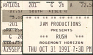

|
November 1, 1991 Rosemont Horizon. Chicago, IL
 scan by Bryan Nyary (note that the date was incorrectly printed as October 31st)
The Chicago Tribune
Rush still feels no special need to hurry The great dividing line of '70s rock was Rush. The Toronto trio seemed to embody everything there was to love -- and hate -- about so-called progressive rock, a style built as much on the melodic structures of classical music and the instrumental interplay of jazz as it was on the energy of rock. Fans loved Rush's dextrous musicianship, cosmic lyrics, Baroque time signatures, stop-start tempo changes and album-long science-fiction stories. Detractors sneered at the band's overblown arrangements, pseudo-poetic songs and the straining vocals of Geddy Lee, whom more than one critic likened to Donald Duck. Cruel as some of these assessments were, Rush soldiered on and became one of the most popular, longest-lived, hard-rock/heavy-metal bands in the world -- the Grateful Dead, if you will, of their genre. Despite only one Top 40 single in 17 years, bassist-singer Lee, guitarist Alex Lifeson, and drummer Neal Peart continue to fill concert halls and sell albums by the millions. And, wonder of wonders, Rush is even earning some respect. Cutting-edge bands such as Living Colour, Metallica, Fishbone, Megadeth and Queensryche all cite Rush as a key inspiration. What these bands relate to is Rush's attitude as much as its music. The band approached each show and album as a purely musical experience, and even though its arrangements tended to become a bit bloated, Rush cut away all other distractions: fashion, fancy staging, special effects, the very idea that a band had to have a sensationalistic, larger-than-life image to succeed. Especially in the increasingly glitzy world of 1970s hard rock, a sense of style seemed to be a must. Kiss, Alice Cooper, Black Sabbath, Led Zeppelin -- as musical as some of these bands were, they all cultivated an extra-musical personality as showmen, cartoon characters, satanic henchman, sex gods. Rush had no image outside of its music: Just three guys who could be your next-door neighbor playing increasingly complicated original compositions through a stack of amplifiers. "Every time we put a record and it does well we think, 'Yes! We've gotten away with it again,'" says Peart, now 39, with a laugh. "We never take anything for granted, we constantly feel as though we have to live up to expectations. Perhaps that's why our fans are so loyal. Whether we're playing in Omaha or New York, we always go out there with the idea of doing our best, and I think we've built up a reputation for integrity because of that." Exploring new territory The band's artistic temperament dictates such commitment, he says. "It was a point of honor among many drummers I knew to make a living playing drums, no matter what the music," he says. "With me, it was always a case that I would rather not play if I couldn't play the music I wanted to make. I'm competent at other things. I could work in a shoe store if I had to. I didn't play drums to make a living, so it was easy to be uncompromising as a musician." It comes as no surprise that with every few albums, Rush explores new musical territory. The trio began as a blues-metal band influenced by Cream and the Yardbirds, shifted to longer progressive pieces in the mid-'70s, anthemic arena rock in the '80s, and now has settled into a leaner and -- believe it or not -- funkier groove. The band's most recent album, "Roll the Bones" (Atlantic), ventures into funk rhythms and even contains a rap vocal by Lee (I think this guy was assuming it was Lee) on the title track. "We felt intrigued lyrically by what was going on in the better rap tunes," says Peart, the band's lyricist. "And the timing was right. Rap is a very valid expression of anger, repression, rebellion -- all the things that rock stands for. You see bands like Faith No More incorporating rap, the Public Enemy-Antrax collaboration. To us, it wasn't fakery, but a true expression of where rock has gone in the last few years." As for the funk, Peart says that the band's home base of Toronto "was the white rhythm and blues center of the '60s. I grew up on James Brown." The drummer says such musical detours are why Rush is still making albums into its third decade. "Our work is uneven by design," he says. "We are determined to push our boundaries on each album. What's important is trying the experiment, not whether it works or not." Displays of technique In the same way, Peart, one of the more inventive rock drummers, constantly plays "mind games" with himself to keep his job interesting. "Before we recorded the new album, I completely rearranged my drum kit just so I wouldn't fall back into my familiar patterns," he says. His work at the tail end of "Bravado" from the new album is breathtaking, with all four limbs pounding out contrasting but still complementary rhythm lines. Once, such displays of technique were ends in themselves for this band of budding virtuosos, but Peart says the trio now is more interested in constructing solid songs. The difference is telling. The musical elements that used to make the band so annoying to some critics -- the long, winding compostions and Lee's shrieking vocals -- have been tempered in recent years. "The five-minute song isn't a limitation to us anymore," Peart says. "We don't need a suite to express ourselves." He says the band's once-consuming interest in keyboard technology and electronics has also fadded, and the trio sought a more simplified, organic approach on the last two albums, both recorded with producer Rupert Hine. "Our previous producer was into a more-is-better approach, and that was fine for where we were at the time," Peary says. "Now we're less intrigued by the novelty of using choirs and strings, and more into the basic instruments." Lee also is singing in a warmer, more natural range. "Geddy had to scream in the beginning to be heard over the rest of the band because our equipment was so bad," Peart says. "And I never used to pay attention to things like what key the song was in or how euphonious the words were, how a particular syllable would roll off the singer's tongue. I'll rewrite lines now if it's a problem for Geddy to sing it." Peart's lyrics for each album usually revolve around a theme. The ideas of chance, fate and contingency play a central role in "Roll the Bones," which emerged when Peart was playing with a stack of cards one night. "The image of the wild card prompted all kinds of thoughts -- that a lot of what happens to us is out of our control," he says. "In 'Heresy,' it's about the bad luck of being born in Eastern Europe in this century. The Berlin Wall falling had a tragic aspect -- all those wasted lives." A few stumbles Long admired as one of rock's more cerebral lyricists, Peart says his songs come from the gut as much as any rocker's. "I guess I just go through the extra effort to figure out why something makes me sad or happy," he says. For example, one of his more recent songs, "The Manhatten Project," about the building of the atomic bomb, was written only after he extensively studied the subject. "It's a personal work ethic that makes me do that," he says. "I've always viewed writing lyrics as a craft that can be developed." In the same way, Rush has turned the long-disparaged style known as hard rock into something of an art form. Despite a few stumbles along the way, and a few detours that seem laughable in retrospect, Rush has emerged as a best-selling band with its integrity intact. "Compared to the mainstream, we've always been this little backwater," Peart says. "But somehow we've been allowed to flow along, and we've found that people always want an alternative. We're happy to be that." |